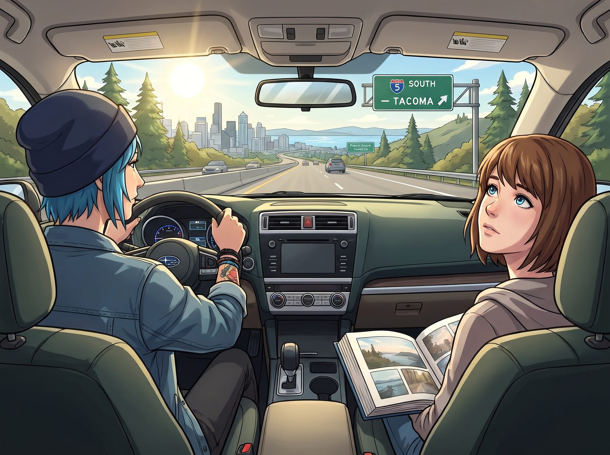
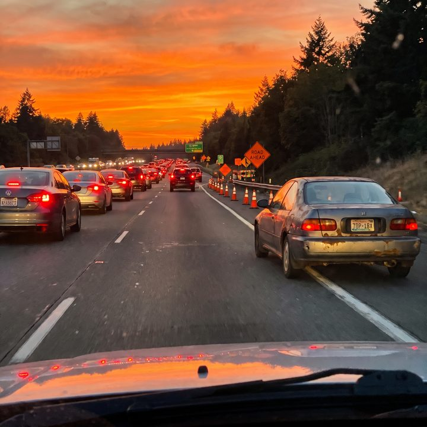

電子 Lily


一、九點和三點
逃出國會山莊以後，墨綠色的 Outback 開上了 I-5 南向。
從西雅圖回營地有兩條路：搭渡輪過海灣，或者一路往南繞過塔科馬，再從海峽大橋開上半島。Chloe 選了後者——她剛剛付了一百三十五塊，暫時不想再付任何一張船票。
「說起來，」Max 從攝影集上抬起頭，「妳剛才怎麼沒跟 Lily 討價還價？」
「什麼？」
「洗碗加五成啊。」Max 說，「以前妳闖禍，不是都會跟她談條件嗎？幫她跑個外勤，換一筆勾銷。」
Chloe 盯著前方，沉默了兩秒。
「上次跟她談條件，」她說，「我去氣象站搬了一百磅的電池，在屋頂上接線接到半夜。」
「……嗯。」
「上上次，屋頂的落葉，掃了一整個下午。」Chloe 打了個方向燈，換到右邊車道，「每次都是我以為自己賺到了，最後發現她開的價比原來的懲罰還大。」
「所以這次認了？」
「洗碗加五成，就是洗碗加五成。」Chloe 說，「沒有附加條款，沒有外勤，沒有半夜的山頂。」她嘆了口氣，「大概是被妳的鹹魚傳染了吧。不想折騰了。」
Max 笑了一聲，又低頭翻她的攝影集。
「而且，」Chloe 補了一句，「每次我去跟她談，最後掉進坑裡的都是我們兩個。」
Max 翻頁的手停住了。
「……我們兩個？」
「妳以為氣象站那天晚上，」Chloe 瞥了她一眼，「是誰抱著相機在山頂的大風裡抖了三個小時？」
Max 想了想，默默把攝影集舉高了一點，擋住半張臉。
「……洗碗加五成很好。」她說，「我陪妳洗。」
下午的陽光從雲縫裡漏下來，路上車不多。照理說，這正是把車窗搖下來、音響開到最大、手肘搭在窗框上的時候。
但 Chloe 現在雙手握在方向盤的九點和三點鐘位置，背挺得筆直，表情比當年考路考時還要僵。
「我發誓，」她咬著牙，眼睛盯著前方，「這台車被 Lily 下了降頭。」
「別誇張，它開起來很穩啊。」Max 縮在副駕駛座上，雙腿蜷著，膝蓋上攤著剛拿到的攝影集，「而且座椅有加熱。比妳那台冬天像冰窖一樣的猛禽好多了。」
「穩？它是一台帶輪子的老媽子！」Chloe 下意識鬆開右手，轉頭看向 Max，「妳剛才有沒有看到那個拖車司機的臉？當 Lily 說出他車門上的編號的時候，他的表情就像——」
車子的右前輪，輕輕壓上了車道邊的白線。
下一秒，方向盤裡傳來一股明顯的、不屬於 Chloe 的力量，像一隻看不見的手，不急不徐地把方向盤往左帶了一點，把車子推回車道正中央。
儀表板上亮起一個小小的綠色圖示。
Chloe 整個人僵住了。
「……它剛剛，」她慢慢地說，「搶了我的方向盤。」
「那叫車道維持輔助。」Max 指了指擋風玻璃上緣那兩個小小的鏡頭，「EyeSight。它一直在看路上的線。」
「這是我開的車還是它開的車？！」
「妳打方向燈它就不會管妳了。」Max 忍著笑，「它只是覺得妳在恍神。」
「我沒有恍神！我現在腎上腺素爆表！」
為了證明自己才是這台車的主人，Chloe 看了一眼後照鏡，確認前後都沒有車，然後慢慢地把雙手從方向盤上拿開，抱在胸前。
「Chloe，別鬧。」
「我倒要看看它能拿我怎樣。」
車子自己沿著車道開了幾秒。
「嗶——嗶——」
儀表板上跳出一行字：請手握方向盤。
Chloe 沒理它，嘴角掛著叛逆的笑。
「嗶嗶嗶嗶——」
聲音越來越急，字變成了閃爍的。
Max 看著那行閃爍的字，若無其事地補了一句：「對了，妳知道這台車有緊急通報系統吧？出事的時候會自動打電話。」她頓了頓，「緊急聯絡人那一欄，填的是 Lily。」
Chloe 用她這輩子最快的速度撲回了方向盤。
雙手死死握住，九點，三點。
警告聲停了。
車廂裡安靜了大概五秒鐘。
然後 Max 把臉埋進攝影集裡，肩膀劇烈地抖了起來。
「很好笑嗎，Caulfield？」Chloe 目不轉睛地盯著前方，脖子僵得像打了石膏，「這不是兜風。這是一場由電腦監督的押運。我就是那個被押送的犯人。」
「它不會因為妳放開手就打電話啦。」Max 笑到眼淚都出來了，「要撞車才會。」
「……那妳剛才為什麼要說？」
「因為妳撲過去的樣子太好笑了。」
Max 探過身，在 Chloe 的臉頰上飛快地親了一下，然後坐回去，瞄了一眼擋風玻璃上那兩個小鏡頭。
「看來副駕駛座不歸它管。」
「別高興得太早。」Chloe 從牙縫裡說，「等一下要是它敢自己幫我踩煞車，我就把它的鏡頭用膠帶貼起來。」
二、路怒症休假
烏鴉嘴從不遲到。
十分鐘後，前方三線道因為道路養護，硬生生縮成了一條。紅色的煞車燈連成一片看不到盡頭的燈海。
一輛沒打方向燈的破舊喜美，從右邊路肩斜斜地插了進來，差點擦到 Outback 的前保險桿。
Chloe 的眉毛瞬間倒豎，右手已經摸上了喇叭，左手按住了車門上的車窗開關，準備把窗戶降下來，向對方輸出她累積了二十年的奧勒岡街頭詞彙。
「別。」Max 伸出一根手指，按下了方向盤右側一個印著小車圖示的按鈕，「交給電子 Lily。」
儀表板上亮起綠色的跟車巡航圖示。
前面那輛喜美又一次急煞的時候，Outback 比 Chloe 的右腳反應得還快——平穩、線性地減速，停在一個不遠不近、剛好讓人生不起氣來的距離上。前車蠕動，它就跟著蠕動。不用踩油門，也不用踩煞車。電腦用一種毫無情緒的冷靜，接管了這場讓人窒息的塞車。
Chloe 懸在喇叭上的手，僵了兩秒，最後訕訕地收了回來。
「……好吧。」她看著前面那個還在一下一下狂踩煞車的蠢蛋，忽然覺得衝上腦門的血壓降了一點，「看在它幫我省了一串髒話的份上，這功能還有點人道主義精神。」她靠回椅背，「路怒症今天休假。」
Max 舒服地往座椅裡陷了陷，把座椅加熱轉到最高的那一格。
「而且妳得承認，」她說，「這台車至少不會跟妳要訂閱費。前兩年有個德國車廠，連手機連車用的 CarPlay 都要按年收錢。妳買了車，功能明明就在裡面，不交年費就不給用。」
「資本主義的終極無恥。」Chloe 嗤了一聲，「這台要是敢跟我收訂閱費，我今晚就拿烙鐵拆了它的中控台。」
「放心。」Max 回頭看了一眼後車廂，「Lily 收鑰匙那天就把整本手冊讀完了。這台沒有。」
三、兩公尺
她們身後，後排座椅已經全部放平。
這台名義上是五人座的 Outback，車身長度幾乎跟一台三排座的休旅車差不多。座椅放平以後，從後車廂門到前座椅背，是一片將近兩公尺長的平整空間。
現在那裡塞著：Max 從書店抱回來的三箱精裝攝影集，順路幫 Kate 去園藝中心買的四大袋有機培養土，以及一台老式立式鑽床。
那台鑽床，是 Chloe 在西雅圖南邊一家二手五金行門口看見的。標價四十塊，老闆說是一個退休機械師留下來的，馬達還很順。老闆只收現金。兩人在店門口把口袋翻了一遍：Chloe 那張皺巴巴的二十塊，加上 Max 錢包裡的二十塊，剛好四十。剛才在拖車面前派不上用場的現金，最後全花在了這台鑽床上。
「如果開的是猛禽，」Max 說，「這台鑽床現在應該躺在車斗裡淋雨。」
Chloe 沒說話。
窗外，雨開始一點一點落下來。
她從後照鏡裡看了一眼那台安安穩穩躺在乾燥車廂裡、跟攝影集和培養土擠在一起的老鑽床，又看了一眼擋風玻璃上越來越密的雨點，嘴唇抿成了一條線。
四、最後一哩
車子終於離開柏油路，拐進通往營地的林間土路時，雨已經下了快一個小時。
前幾天的暴雨加上今天這一場，原本的碎石路變成了一條滿是水坑、爛泥和濕落葉的上下坡。
「坐穩了。」Chloe 握緊方向盤，「前面那個坡全是泥。」
她伸手按下中控台上一個印著山形圖示的按鈕。儀表板上亮起綠色的「X-MODE」。
車輪碾進那片深到腳踝的泥坑時，Chloe 預想中的打滑和空轉並沒有發生。電腦在一瞬間就把打滑那幾個輪子的力氣收了回來，送去給還抓得住地的輪子。下陡坡的時候，陡坡緩降自己介入，車速穩穩地壓在一個步行的速度，四個輪子像是長了眼睛，一步一步咬住濕滑的泥地。
猛禽走這條路，從來不怕。它有更大的輪胎、更高的底盤、更兇的引擎，Chloe 開著它衝這個坡，可以一路吼上去。
但開猛禽衝坡的時候，車斗裡的東西會跳，車廂裡的人會被顛得撞到車頂，Max 每次都要抓著扶手。
而現在，Outback 的車廂裡，晃動輕得像是一條小船浮在一片沒有風的湖面上，只有一點溫柔的起伏。
後車廂裡，那台沉甸甸的鑽床，連一點滑動的聲音都沒有發出。
Max 把攝影集闔上，抬起頭，看著窗外那片在雨裡往後退的杉樹林，一臉安詳。
五分鐘後，墨綠色的 Outback 駛進了二號車廂前的空地，穩穩停住。
五、又愛又恨
Chloe 推入 P 檔，熄火。
她沒有馬上下車。她坐在駕駛座上，雙手還搭在方向盤上，看著儀表板上的燈一格一格暗下去。
「怎麼了？」Max 解開安全帶，「還在氣它搶妳的方向盤？」
「不是。」Chloe 嘆了口氣，伸手拍了拍擋風玻璃上緣那兩個小鏡頭，表情混合著機械控的佩服，和叛逆者的不甘心，「我只是在想，這玩意跟車廂裡那個本尊，簡直一模一樣。」
「怎麼說？」
「妳想亂來的時候，它用一百條規矩煩死妳。」Chloe 說，「但等妳真的遇到爛攤子——塞車、要載一台破鑽床、要爬一條全是爛泥的坡——它又可靠得讓妳一點毛病都挑不出來。」
她推開車門，跳進雨裡。
中節車廂的門開了。Lily 撐著一把傘走出來，另一隻手拿著那本線圈筆記本，顯然是出來驗收車輛的。
Chloe 把鑰匙朝她拋了過去。
Lily 一手撐著傘，一手拿著筆記本，根本沒有空手。她慌忙把筆記本往胸口一夾，用兩隻手掌加一本筆記本，手忙腳亂地把鑰匙兜住。
「嗶嗶。」
Outback 的方向燈閃了兩下，車門應聲上鎖。她不知道按到了哪一顆鈕。傘歪到一邊，雨水順著傘沿滴在她肩膀上，眼鏡也滑到了鼻尖。
Lily 沉默地把眼鏡推回去，把傘扶正，表情恢復了平靜，彷彿剛才那三秒什麼都沒發生過。
「嘿，表格大師。」Chloe 露出一個又愛又恨的笑，「妳的分身把我們安全押送回來了。一顆螺絲都沒少。」
Lily 繞著車子走了一圈，看了看輪拱上的泥，又低頭看了看後車廂裡那台鑽床，翻開筆記本。
「車況良好。」她寫了一行，「後車廂載重，超出預期。」
然後她抬起頭。
「下次借車，」她說，「請直接說您想開它。不用先讓猛禽生病。」
Chloe 張了張嘴。
Max 已經抱著攝影集，笑著跑進車廂裡了。